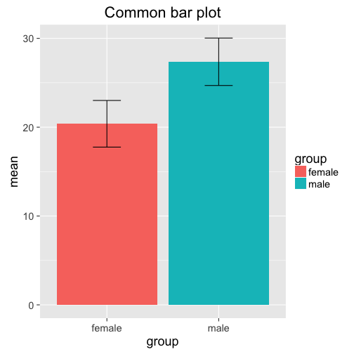
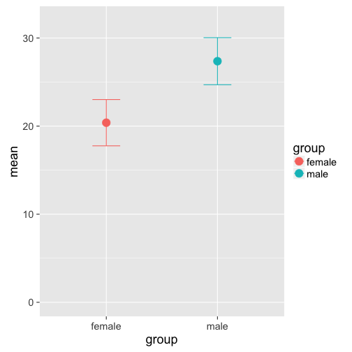
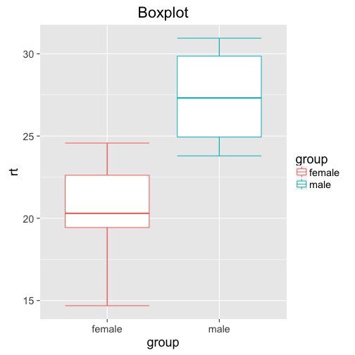
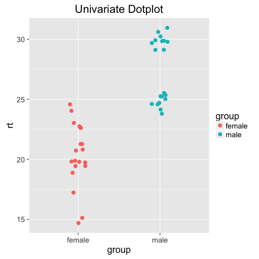
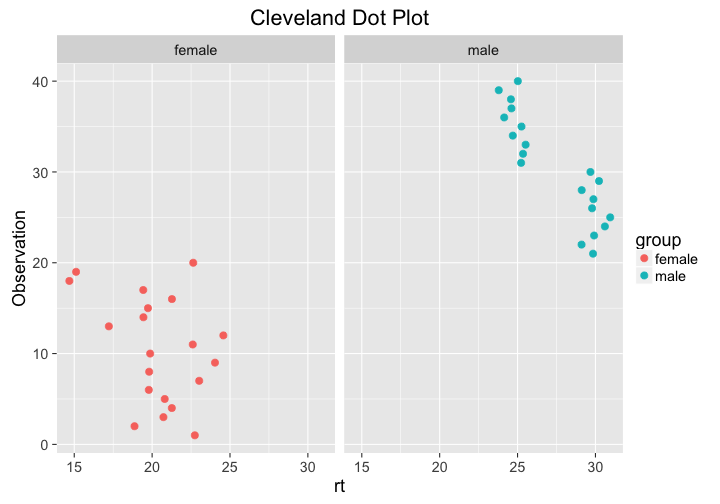

A recent article titled Beyond bar and line graphs: Time for a new data presentation paradigm (Weissgerber, Milic, Winham, and Garovic, 2015) led me to explore some of the pitfalls of bar plots as opposed to other graphs such as box plots or dot plots. Bar plots are incredibly common in academic literature - in their analysis, the authors found that 85% of papers used at least one bar plot to display data. Why is that bad? Well, bar plots only show aggregated data: Usually the mean and either the standard deviation or standard error. There are (at least) three drawbacks of this:
- It doesn't provide more information than pure numbers. Visualizing a mean of 10.34 and a standard deviation of 0.56 does not provide you any more information than simply writing it down.
- Information is lost: Bar plots don't show any information about sample size or the distribution of data (more below).
- Bad data-ink ratio: A lot of ink is used to not display additional information.
In this post, I want to recreate some of the points made in the paper, and show some hands-on R code to illustrate the disadvantages of bar plots (and summary statistics, for that matter).
Let's load some necessary packages for our analysis...
library(dplyr)
library(ggplot2)
... and display some information about our sample data:
summary(df)
## group rt
## Length:40 Min. :14.69
## Class :character 1st Qu.:20.51
## Mode :character Median :24.09
## Mean :23.87
## 3rd Qu.:26.42
## Max. :30.95
In this example, the test data consists of two variables: rt representing reaction times, and group representing gender (male or gender). Let's pretend that we're interested in the differences in reaction times between the two genders (for whatever reason; I'm incredibly uncreative). I included the code to generate the data at the bottom of the post, but for now, let's not look at it. The code actually reveals some of the points I'm going to make later on, so please be patient! (When you analyze your experimental data, you don't know the underlying process either!)
To explore the data further, we can look at the mean and standard deviation of the reaction times in both groups:
agg = df %>%
group_by(group) %>%
summarise(mean = mean(rt), sd = sd(rt))
agg
## Source: local data frame [2 x 3]
##
## group mean sd
## (chr) (dbl) (dbl)
## 1 female 20.38384 2.625257
## 2 male 27.36450 2.670447
From the aggregated data, we can see that the mean for males is higher than for females, but both have roughly the same standard deviation. This might lead us to the conclusion that males (for whatever reason) take longer to react to our experimental stimuli than females. In fact, if we run a simple t-test, we get a significant difference:
with(df, t.test(rt~group))
##
## Welch Two Sample t-test
##
## data: rt by group
## t = -8.3366, df = 37.989, p-value = 4.153e-10
## alternative hypothesis: true difference in means is not equal to 0
## 95 percent confidence interval:
## -8.675816 -5.285512
## sample estimates:
## mean in group female mean in group male
## 20.38384 27.36450
However, is this enough for us to conclude that there actually is a difference between genders? Let's try and visualize the data to find out more about the reaction times and its distribution.
As stated above, a common method is to use a bar plot:
ggplot(agg, aes(y=mean, x=group, fill = group)) +
geom_bar(stat = "identity", position = "dodge") +
geom_errorbar(aes(ymax = mean + sd, ymin = mean - sd ), width = 0.25) +
ggtitle("Common bar plot")

Note that the plot doesn't give us more information than the aggregated data frame agg! In fact, one could argue that the raw numbers are more precise and informative than the bar plot. However, this is what we often find in the literature. A slightly different visual representation showing the same information is this plot:
ggplot(agg, aes(y=mean, x=group, col = group)) +
geom_point(size = 5) +
geom_errorbar(aes(ymax = mean + sd, ymin = mean -sd ),
width = 0.25) +
ylim(0, 32)

The only advantage of this plot is a more economoc data-ink ratio, but it doesn't give us any more idea about the distribution of the data than the bar plot (they also look like the TIE fighers in Star Wars...). Box plots, on the other hand, provide more information about the underlying distribution, emphasizing interquartile ranges and the median (see ggplot2's help page for more info):
ggplot(df, aes(x = group, y = rt, col =group)) +
stat_boxplot(geom ='errorbar') + # adds whiskers to the lines
geom_boxplot() +
ggtitle("Boxplot")

What information does the box plot add? Well, we can see that for females, we get values as low as below 15, and as high as above 25. Most of the datapoints seem to be between 19 and 23. For males, the data seems to be tighter, between 24 and 32 (despite the same standard variation!?)
While the box plot is a definitive improvement over the two previous plots, it still doesn't show us the whole distribution: What exactly is going on between the first and third quantile? How many data points are between 15 and 19 (the bottom whisker for females)?
How can we visualize all this information? Univariate dot plots! Simply plot all the data points individually, and jitter them around a little to avoid overlap:
gp = ggplot(df, aes(x = group, y = rt, col = group)) +
geom_point(size = 3,
position = position_jitter(width = .25))
gp + ggtitle("Univariate Dotplot")

Woah. The distribution for males is bimodal! Probably not a huge surprise if you looked at how we generated the data (you didn't peek, did you?), but not possible to see on any of the previous plots or the summary statistics. Why do we care that the data is bimodal? Maybe it's just fluke, and there is no deeper reason behind it. Maybe there is a latent variable that influences reaction times more than gender - maybe age, or exposure to whatever you're testing. Maybe participants in one group got distracted at some point, delaying their reaction time; or the computer didn't record the data properly. All of these (and more!) could be valid reasons, and need to be considered.
The dot plot additionally shows the distribution of the individual points (to check for outliers) and the sample size. In this case, the sample size of the two groups is the same, but it could very well be different.
If needed, you can also add measures of central tendencies such as the mean yourself. This makes it even more apparent that the male distribution is bimodal:
gp + geom_errorbar(stat = "hline", yintercept = "mean",
aes(ymax=..y..,ymin=..y..),
width = 0.5, col = "black") +
ggtitle("Dot plot with mean")
That's it! I hope I could show why relying on summary statistics and statistical tests isn't always enough. Even visualizing the data with inadequate graphs such as bar plots is not sufficient. Both box plots and especially univariate dot plots can tell you more about the underlying distribution of your data, and might reveal some properties that have to be taken into account. As a final note, there are of course other ways to check for bimodality, such as histograms. Univariate dot plots, however, are more versatile: Check the original paper for more examples, if you're interested!
Alternative: Cleveland Dot Plot
Another way to plot distributions nicely is the Cleveland dot plot, which is very similar to the univariate dot plot describe above - but the axes are flipped and the rt values are plotted against the observation index (see Zuur, Ieno, and Elphick (2009)). Here, values that are either far right or left are considered outliers. The bimodal distribution is clearly visible.
Plotting against the observation index can be helpful in analyzing why the distribution is bimodal. In these data, reaction times for females are higher for later observations - maybe there is a reason for that?
ggplot(df, aes(x = rt, y = 1:length(rt), col = group)) +
geom_point(size = 3) +
ggtitle("Cleveland Dot Plot") +
facet_grid(~group) +
ylab("Observation")

Further Reading:
[1] T. L. Weissgerber, N. M. Milic, S. J. Winham and V. D. Garovic. "Beyond Bar and Line Graphs: Time for a New Data Presentation Paradigm". In: PLOS Biology 13.4 (Apr. 2015), p. e1002128. DOI: 10.1371/journal.pbio.1002128. URL: http://dx.doi.org/10.1371/journal.pbio.1002128.
[2] A. F. Zuur, E. N. Ieno and C. S. Elphick. "A protocol for data exploration to avoid common statistical problems". In: Methods in Ecology and Evolution 1.1 (Nov. 2009), pp. 3-14. DOI: 10.1111/j.2041-210x.2009.00001.x. URL: http://dx.doi.org/10.1111/j.2041-210X.2009.00001.x.
Data generatation
Here is how I generated the data:
library(tidyr)
set.seed(42)
df = data.frame(female = rnorm(20, mean = 20, sd = 2.0),
male = c(rnorm(10, mean = 30, sd = 0.5),
rnorm(10, mean = 25, sd = 0.5)))
df = gather(df, group, rt)